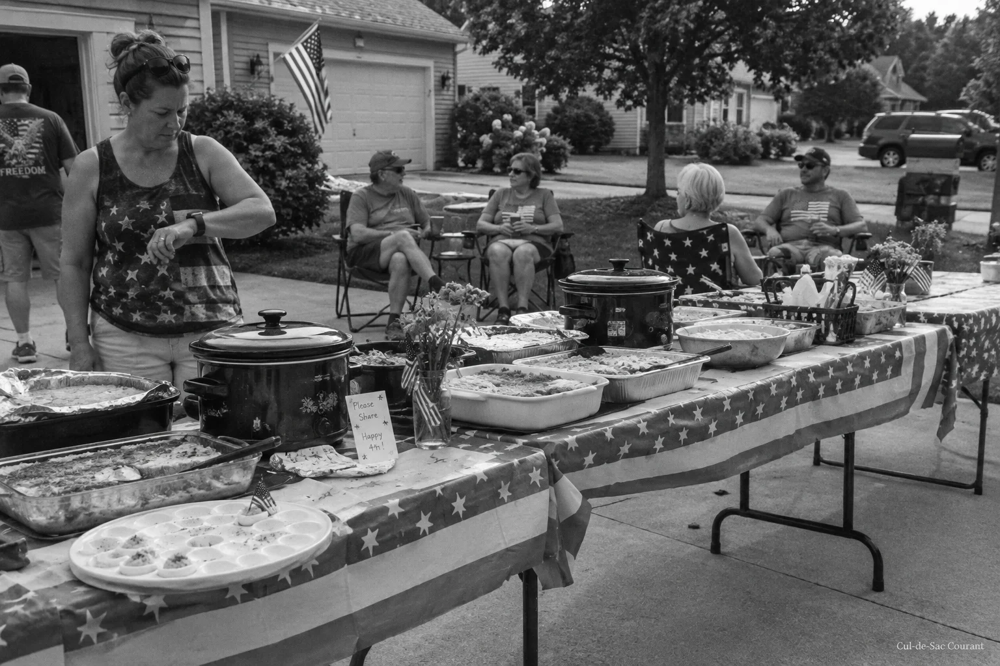

A Courant Investigation
Exposed: the potluck begins 30 minutes before the flyer says it does
Deviled-egg depletion data, eleven years of photographs, and three sources who requested anonymity because they still have to live here establish what many suspected and no one would say on the record.

BUTTERNUT COURT. For eleven years, the flyer taped to the mailbox cluster has said the same thing: Fourth of July potluck, Schmidt driveway, 12:00 noon. For eleven years, residents arriving at noon have found the good folding chairs claimed, the shade positions occupied, and the deviled eggs in a state one source described as "picked over in a way that takes time."
The Courant can now report why. The potluck does not begin at noon. It has never begun at noon. It begins at approximately 11:30 AM, by invitation that travels through channels this newspaper has identified but, for legal reasons, will describe only as "the group text."
The finding rests on three lines of evidence. First, the Courant's photographic archive: in every potluck photo time-stamped before 12:05, the egg tray already shows losses of 40 percent or greater. A full tray holds 48. The Courant has counted. Readers may check the math in the sidebar, and they will, so it is correct.
Second, thermal observation. This year, at 11:10 AM, the Courant recorded four crock pots traveling toward the Schmidt driveway at a walking pace consistent with people who did not want to be seen hurrying. At 11:34, laughter was audible from behind the Schmidt fence. The flyer, photographed the same morning, still said noon.
Third, the sources. Three residents, speaking on condition of anonymity because they still have to live here, confirmed the 11:30 convention independently. One said it dates to 2015, "after the year the Mabry macaroni salad sat in the sun." Another put it earlier. The third declined to give a year and asked whether this was really what the paper was spending its summer on. The Courant confirms that it was.
Reached for comment, Barb Schmidt said the potluck "starts when people show up," a formulation the Courant invites readers to examine closely, because it is doing a great deal of work. Larry Schmidt referred all questions to Barb Schmidt.
The Courant takes no position on when the potluck should start. It takes the position that the flyer should say when the potluck starts. Until the flyer and the potluck agree, this newspaper will publish both times every June, in a box, on the front page.